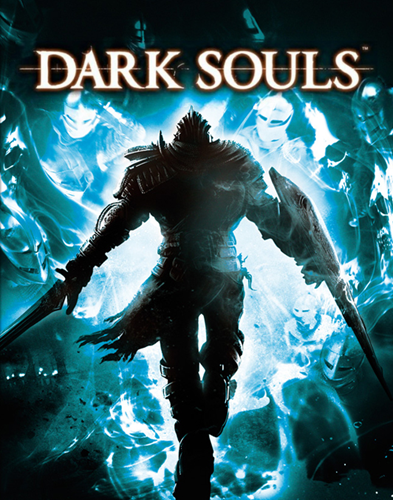
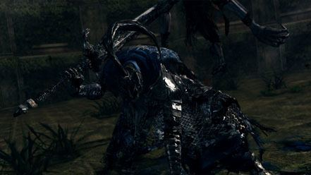

Dark Souls 1
Introdução
VoltarDark Souls (ダークソウル, Dāku Sōru) é um jogo eletrônico do gênero RPG de ação produzido e desenvolvido pela empresa japonesa FromSoftware, e publicado pela Namco Bandai Games. O jogo foi lançado originalmente em setembro de 2011 para PlayStation 3 e Xbox 360, e é um sucessor espiritual de Demon's Souls e o primeiro título da série Dark Souls. O enredo de Dark Souls se passa no reino fictício de Lordran, onde os jogadores assumem o papel de um personagem morto-vivo amaldiçoado que inicia uma peregrinação para descobrir o destino de sua espécie. Um relançamento para Microsoft Windows foi realizado em agosto de 2012, com conteúdos adicionais não presentes em suas versões originais. Em outubro de 2012, um novo conteúdo para download foi disponibilizado para a versão de consoles, sob o subtítulo Artorias of the Abyss.
Dark Souls recebeu aclamação da crítica, com muitos citando-o como um dos melhores jogos de todos os tempos. Os críticos elogiaram a profundidade de seu combate e level design. No entanto, a dificuldade do jogo recebeu críticas mistas, com alguns criticando-o por ser implacável demais. A versão original do jogo para Windows foi menos bem recebida, com críticas direcionadas a vários problemas técnicos. Em abril de 2013, o jogo havia vendido mais de dois milhões de cópias em todo o mundo. Duas sequências, Dark Souls II e Dark Souls III, foram lançadas em meados da década de 2010, enquanto uma versão remasterizada foi lançada em 2018.

Jogabilidade
VoltarO sistema de jogabilidade apresenta-se em terceira pessoa e com foco em combates estratégicos e dinâmicos, inseridos em uma íngreme curva de dificuldade, característica mais marcante da série. O sistema de progressão baseia-se na tradicional progressão de atributos, que variam desde força à inteligência, estamina e fé, dentre outros. Em sua jornada, o jogador encontrará ambientes diversos, como masmorras, fortalezas, cemitérios, lugares fantásticos, complementados por um game design circular, com a interconexão das mais diversas áreas em pontos específicos da narrativa. O sistema online preza pela interação entre jogadores, seja através de dicas in-game sobre os desafios existentes, combate entre jogadores e cooperação para completar determinados pontos do game.
Enredo
VoltarDark Souls se passa primariamente no reino fictício de Lordran, onde os jogadores assumem o papel de um personagem denominado "Chosen Undead" que, segundo lendas, seria responsável pela quebra de uma maldição que torna incapazes de morrer aqueles que são afligidos por uma misteriosa marca negra. O jogo é inspirado fortemente pela temática medieval, com a presença de deuses e seres fantásticos, inseridos em um mundo decadente e punitivo. A estrutura de apresentação da história é subjetiva, dando-se basicamente através da descrição de itens ou em interações com NPCs, possibilitando margem para diversas interpretações acerca de toda a mitologia presente no jogo.
Recepção da Crítica
VoltarDark Souls foi aclamado pela critica desde seu lançamento, com elogios principalmente a complexidade de seu combate e jogabilidade, level design e sua história e ambientação. No site Game Rankings, as versões de PlayStation 3 e Xbox 360 possuem 89% de aprovação em críticas agregadas, indicando aclamação universal. Entretanto, o jogo também foi criticado por conta de bugs.
Expansões
Voltar
Uma versão remasterizada do jogo, intitulada Dark Souls: Remastered, foi lançada mundialmente para PlayStation 4, Xbox One e Windows em maio de 2018, e para o Nintendo Switch em 19 de outubro de 2018. O remaster foi portado pelo estúdio polonês QLOC, enquanto a versão Switch foi portada pelo estúdio cingapuriano Virtuos. O jogo roda a 60 quadros por segundo nativos em todas as plataformas, exceto o Nintendo Switch, e suporta resolução 4K no PlayStation 4 Pro, Xbox One X e Windows. Várias mudanças foram feitas no multijogador online, incluindo a adição de servidores dedicados, o aumento do número máximo de jogadores online de quatro para seis e o matchmaki.
Legado
Após o seu lançamento, Dark Souls influenciou profundamente o mundo dos jogos eletrônicos. Sendo responsável pelo surgimento de um novo sub-gênero de jogos denominado "Soulslike", referente a jogos com semelhanças fortes com os jogos da franquia, o game inclusive já foi eleito como o melhor de todos os tempos.